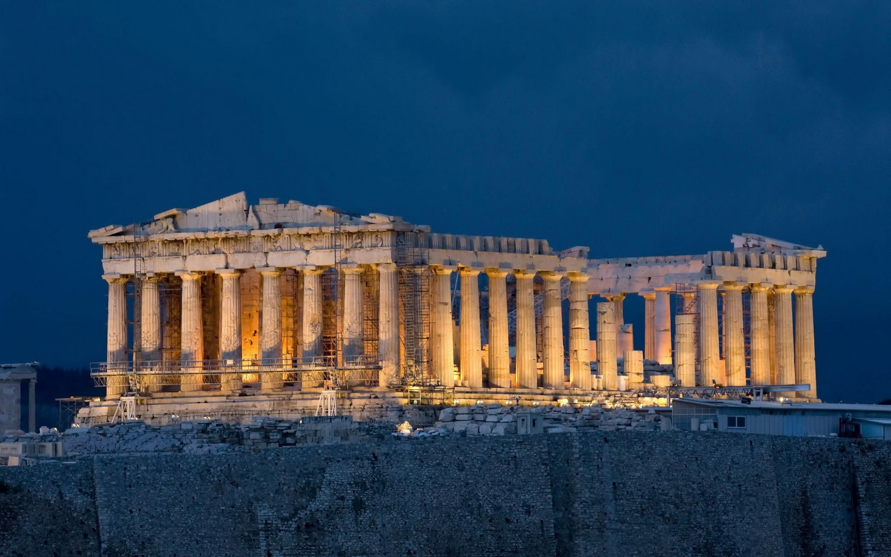

Ο Παρθενώνας

Ο Παρθενώνας, αφιερωμένος στην Αθηνά Παρθένο, αποτελεί το κορυφαίο δείγμα δωρικού ναού και σύμβολο της κλασικής Ελλάδας. Κατασκευάστηκε μεταξύ 447 και 438 π.Χ., υπό την επίβλεψη του Φειδία, και σχεδιάστηκε από τους Ικτίνο και Καλλικράτη.
Οι ανάγλυφες μετόπες, η ζωφόρος και τα αετώματα του ναού αφηγούνται ιστορίες μυθολογίας και αθηναϊκής ταυτότητας. Στο εσωτερικό του φιλοξενούσε το περίφημο άγαλμα της Αθηνάς από χρυσό και ελεφαντόδοντο.
Η αρχιτεκτονική του ενσωματώνει διορθωτικές καμπυλώσεις και αρμονικές αναλογίες, ώστε να δημιουργεί την ψευδαίσθηση τέλειας ευθυγράμμισης. Ακόμη και τα τύμπανα των κιόνων ελαφρώς κλίνουν προς τα μέσα, για λόγους οπτικής διόρθωσης.
Ακολουθεί βίντεο αναπαράστασης του μνημείου κατά την αρχαιότητα.